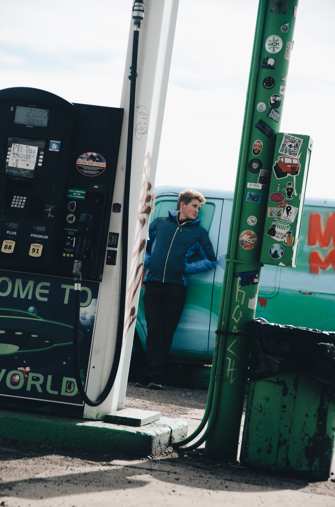
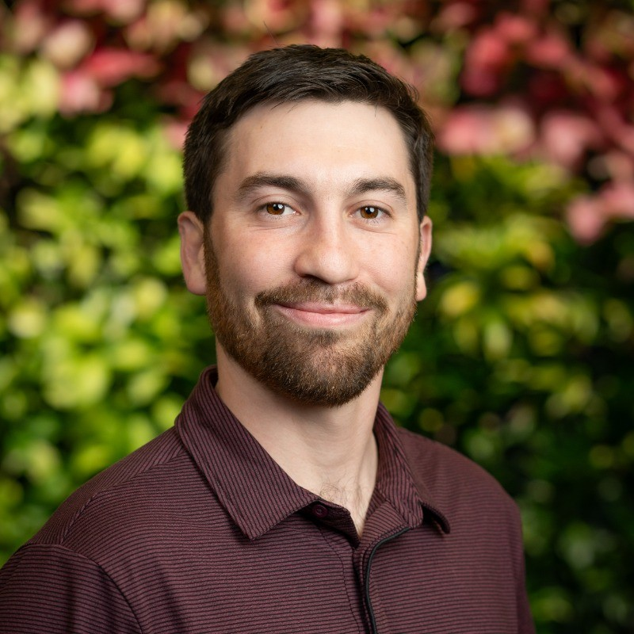
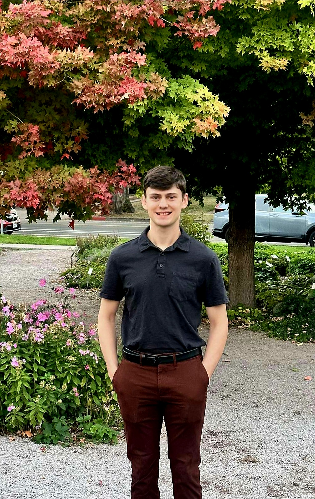
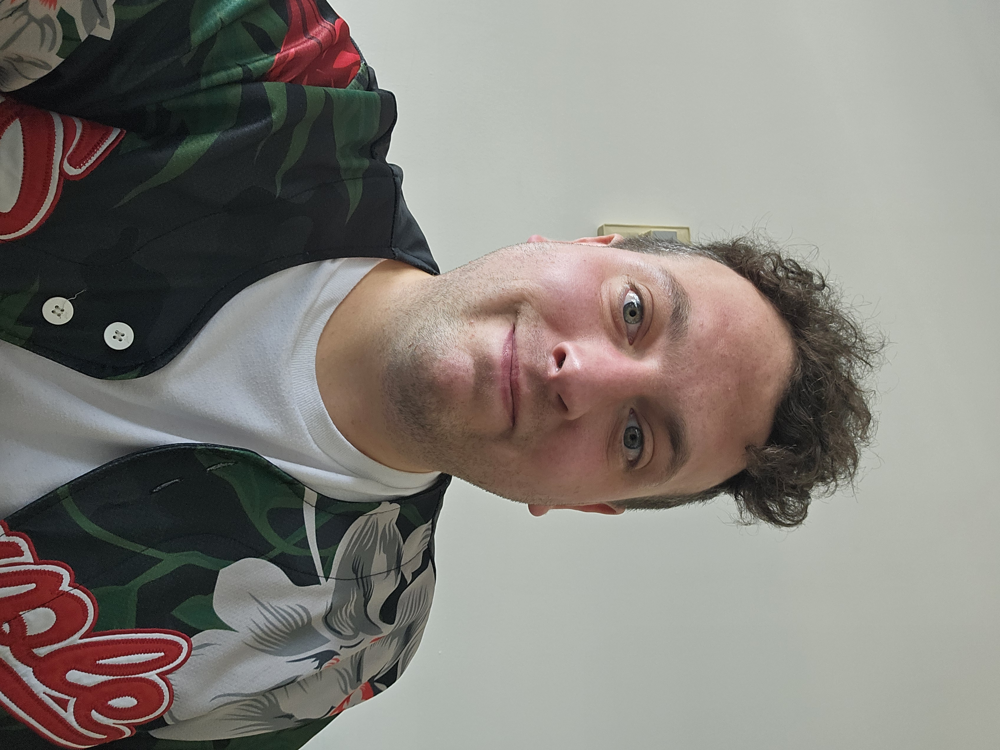
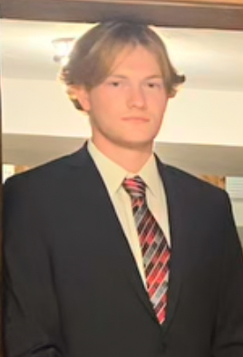
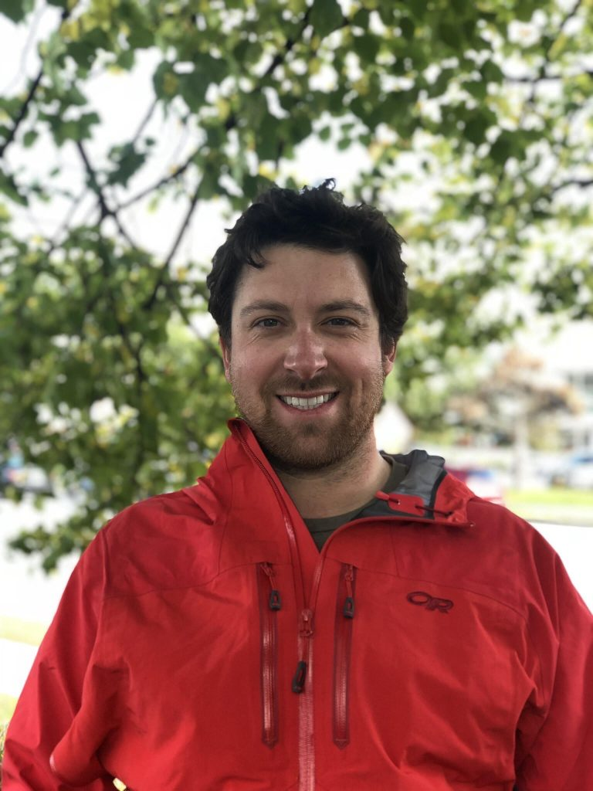

Summary
The Optomechanics team designs, prototypes, and validates the mechanical and optomechanical hardware that routes and stabilizes the laser beam. Work includes precision mounts, mirror holders, translation stages, vibration isolation, and mechanical interfaces to ensure accurate alignment and safe operation at the ATLAS testbed.
Project Goals
- Design and build optomechanical systems for precise laser beam transport and alignment.
- Ensure mechanical stability and vibration isolation for high-power laser operation.
- Test optomechanical systems for resonence frequencies and micron precision during operation.
- Support the ATLAS facility's mission for advanced laser-driven fusion research.
Meet the Team

Cameron Lindeman (MECH)

Crawford Webb (MECH)

Logan Webb (MECH)

Max Smiley (CE)

Michael Brumbaugh (EE)

Faculty Advisor: Dr. Reed Hollinger
Design Workplan
- Requirements Gathering: Collaborate with Fusion staff to define system needs and constraints.
- Conceptual Design: Redesign CAD models of beam transport and optomechainal mounting systems.
- Analysis: Perform mechanical analysis to ensure stability and performance.
- Prototyping: Build test platform with critical ocmpnents included.
- Testing & Validation: Conduct alignment, vibration, and safety tests. Iterate as needed.
- Documentation: Prepare detailed drawings, CAD designs, and photgraphs for future work in the ATLAS facility.
Contact
For more information, contact Dr. Reed Hollinger or the optomechanics team.
Timeline & Deliverables
Planned vs. Delivered (project-specific milestones). Rows provided for September–December for you to fill in details.
| Month | Deliverable | Status / Notes |
|---|---|---|
| September | Project Proposal / Requirements | |
| October | CAD & Preliminary Design | |
| November | Prototype Fabrication | |
| December | Assembly & Initial Testing |
Project Media
Mirror Raft — Before & After


Documents
Note: Only post non-proprietary documents approved by advisor.